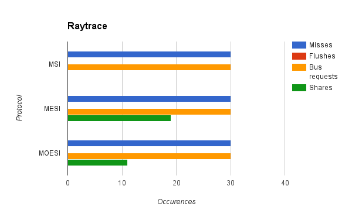
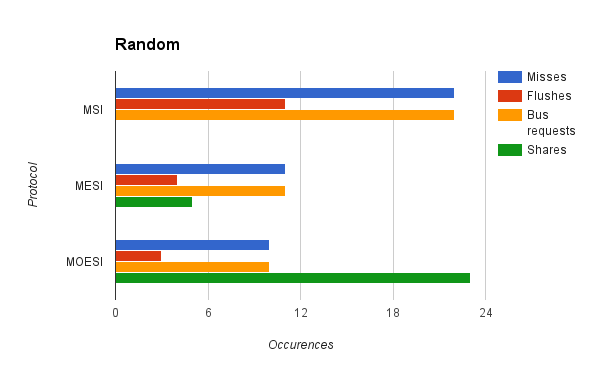

Final Project Writeup
Links
Github repo
Slides
Summary
We created a configurable multi-processor cache simulator. Our full package includes a custom Intel Pin tool for generating memory traces from arbitrary binaries, and the simulator itself, which can simulate the MSI, MESI, and MOESI cache protocols. We created the different protocol simulators using vanilla C++, and we compared the performance between the three protocols on generated memory traces. We found that in cases of low false-sharing of data, MOESI performs the best followed by MESI and MSI, and in general this held true.
Background
For our project, we decided to further explore the cache protocols we learned about in class and their comparative performance in both real-world applications and synthetic testbenches. One of the most important concepts that we had to consider was cache coherence. Cache coherence ensures that every processor in a system is dealing with updated data, an important requirement for systems of processors that share memory but have separate caches. The three cache coherence protocols we explored in this project MSI, MESI, and MOESI.
The MSI protocol has a FSM as such:

A cache line can be either modified, shared, or invalid. A modified line means that the data in main memory is stale, and no other cache has that line. A shared line means that the data may or may not be present in other caches, but no cache has changed the data. Invalid means that the cache line is not accurate. A read is a hit if the cache has the line in the shared or modified state. A write is a hit only if the line is in the modified state already. For a read miss the cache must issue a request to the bus asking for the data. Any cache that has the line in the modified state must flush the new data to main memory, set its own line to shared, and then the requesting cache can get the requested data. For a write miss, any cache that has the line in the shared state must invalidate their line, or if the line was modified in another cache, the same procedure for a read miss must occur.
The MESI protocol has a FSM as such:

The protocol is similar to MSI, but adds the Exclusive state. On a read miss, if no other cache had that line, then the requesting cache stores the line in the Exclusive state. On a write, if the line is in the Exclusive state, no bus request must be made, as it is guarenteed only one cache can have the line. Additionally, on a read miss, other caches may service the data request if they have the line and not involve main memory.
The MOESI protocol has a FSM as such:

The MOESI adds an Owned state to MESI. Now when another cache requests to read, and another cache has the line in the modified state, rather than flush the dirty line to memory and then read that data, the cache with the line in the modified state changes to the Owned state, and gives the requesting cache the data. Now main memory is no longer valid, and the cache with the Owned line is responsible for servicing all read requests. The data is only flushed back to main memory on an evict. If a cache tries to write to an Owned line, a bus request is made just so that the other caches invalidate their lines, but still no request goes to main memory.
As input, our system takes in any binary executable. It will output data about the program's execution, including the number of hits, misses, evictions, memory flushes, cache to cache shares, as well as the number of simulated cycles it takes to complete the program's memory operations.
Approach
Intel Pin tool
In order to generate our memory traces, we used the Intel Pin tool. There already exists a tool in the Pin toolkit for generating memory traces for any given executable. However, the trace generated contains a great deal of irrelavant system calls. Even simple programs yielded trace files tens of megabytes large. However, after obtaining some insight from Yuyang Guo and Isaac Lim's project from last year, we found that we could specify which functions were relevant and only generate traces for those routines. Thus, we were able to get our trace files down to an acceptable size.
Cache Simulator
We created our project in C++, and used the Visual Studio environment to build it. Below is a description of each of the important classes we used in our project and their purpose.
CacheController
This was the top-level class of our cache simulator. It contains an array of Cache objects, as well as a CacheConstants object to keep track of the constants we were using in the simulator. It would parse the given trace file, create a new CacheJob, and assign it to the appropriate Cache.
Cache
An object of this class represented an L1 cache belonging to a single Intel i7 processor. It contains CacheSets, which in turn contains CacheLines. For each CacheJob, it would see if the request was a hit or a miss, and respond appropriately as defined by the specific protocol. This class would also make BusRequests as needed, and simulate a stall while waiting to win access of the bus or wait for an appropriate response.
At any point in time, the Cache also would snoop BusRequests made by other Caches, update the state of its own CacheLine if needed, and respond to the AtomicBusManager information about that line, as per the coherence protocol.
CacheConstants
This class contains all of the user-defined constants used in the cache simulator, such as the numer of sets, the set associativity, the number of bytes per line, which protocol we are currently simulating, the cost of a cache hit, the cost of a cache miss, and the cost of cache-to-cache communication.
AtomicBusManager
This class handles all bus transactions. It ensures that Cache objects perform the appropriate transitions onto their cache lines when bus transactions are performed. It sees if any Caches have a pending BusRequest, picks one, broadcasts the request to all other caches, and notifies the requesting cache the appropriate data depending upon the protocol.
CacheJob
This is a memory request, consisting of a single character representing read or write, the memory address requested, and the thread ID of the thread requesting the data.
System Diagram
This is a visual representation of the different classes that comprised our simulator.
Verification
In order to verify that our cache simulator was actually correct, we hand-wrote test memory traces for each of the cache coherence protocols. These traces would ensure that each transition for a given protocol was undertaken at least once. They would also check the eviction policy for each protocol. We then compared the expected state transitions and outputs with what our simulator produced.
Memory Manager
In order to preserve serialization of processing memory requests, we used a serialized memory manager that would only process one memory request at a time. As a result, our cycle counts are unrealistically high. A real memory manager would be able to reorder memory requests and more than one request could be processed at a time. However, the relative cycle costs are correct. Therefore, although the cycle counts themselves are not useful, it is useful to compare cycle costs across different programs or cache protocols.
Results
We used our cache simulator to test several different programs. First, we compared cache performance of a program that had significant amounts of false sharing with a program that accomplished the same task but did not have false sharing.


As can be seen from the graphs, misses, flushes, and bus requests are significantly decreased for the program with no false sharing. This is as expected. All of the cache protocols were able to demonstrate that even if the program accomplishes the same task, the way that the data is organized can have a major impact on cache performance. However, there are some issues with the results. First of all, we were expecting MOESI to perform better than MESI and MSI for the false sharing trace. However, it seems to be performing worse, with more misses and more memory flushes, as well as more cycles. This may be a result of unforseen overhead cause by the MOESI protocol and the way we were counting misses, or it could be that there is a bug with the transfer of ownership of cache lines in our implementation of the MOESI protocol. This inconsistency is an area of further inquiry and development for the future.
We also used our cache simulator on a CPU raytracer written for another class. As the memory trace file was very large, we use a small sample of the trace file that was compiled from random samples of the whole trace file. 
The raytracer trace consisted almost entirely of memory reads. As a result, the performance of all of the cache coherence protocols were almost exactly the same, as the difference between the protocols lies in the existence and behavior of the exclusive and modified states, which are only entered when writes are performed. However, there is a difference in the the number of data shares between the MESI and MOESI protocols. We were expecting MOESI to have more shares than MESI, but the opposite was true. We suspect that this also may have been due to a bug in the ownership transfer in our implementation of the MOESI protocol. Cycle counts for this test correlated with the misses and shares counts. MESI, which was able to take advantage of data sharing, had a cycle count advantage over MSI. MOESI, which had less data shares, took more cycles than MESI.
Finally, in order to test memory shares, we tested our cache simulator on a trace with completely random memory accesses. 
On this trace, our simulator performed as expected. MSI performed the worst, as it could not take advanage of data sharing. The higher amount of data sharing offered by MOESI allows it to outperform MSI. This performnce gain is also reflected in the cycle count, with MOESI and MESI performing much better than MSI, and MESI performing marginally worse than MOESI.
Conclusion
As a tool to compare performance of different programs, as well as different cache protocols, our simulator was a success. We can reliably detect false sharing in programs and find which coherence protocol is better for which situations. There are, however, areas for improvement. In the future, we can look further at the finidng the ownership bug in our implementation of the MOESI protocol. Addtionally, we can generate more realistic cycle counts by writing a better memory manager. Equal work was performed by both project members.